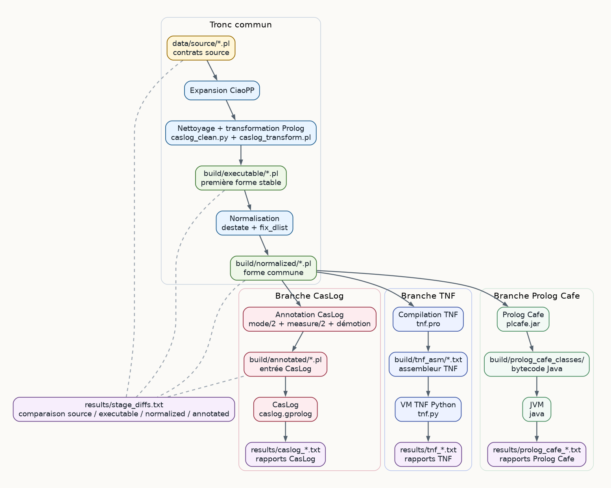

Architecture¶
Rôle du dossier¶
ciaoimp_pipeline est une version portable du pipeline CiaoImp pour les
contrats CiaoMoka/Prolog. Le dossier peut être déplacé sur une machine cible à
condition de conserver sa structure interne.
Le pipeline transforme un contrat source en trois familles de résultats :
- une entrée annotée pour l'analyse statique CasLog ;
- un assembleur TNF exécuté par la VM Python embarquée ;
- une traduction Java exécutée par Prolog Cafe.
La logique active du pipeline se trouve principalement dans pipeline.py et
dans src/. Les dossiers tools/caslog/ et tools/LogicTransformers/
fournissent les moteurs externes nécessaires, mais ne constituent pas la
documentation principale du pipeline.
Flux global¶

data/source/*.pl
-> expansion CiaoPP
-> nettoyage et transformation Prolog
-> build/executable/*.pl
-> normalisation (destate + fix_dlist)
-> build/normalized/*.pl
-> annotation CasLog
-> build/annotated/*.pl
-> exécution CasLog
-> results/caslog_*.txt
-> compilation TNF
-> build/tnf_asm/*.txt
-> exécution VM TNF
-> results/tnf_*.txt
-> traduction Prolog Cafe
-> build/prolog_cafe_src/ & build/prolog_cafe_classes/
-> exécution Java
-> results/prolog_cafe_*.txt
results/stage_diffs.txt compare les étapes publiques générées.
build/normalized/ est la forme commune avant bifurcation. TNF et Prolog Cafe
la consomment directement, tandis que CasLog consomme la version annotée
dérivée dans build/annotated/.
Chaîne d'exécution¶
Le runner applique la séquence suivante :
- Résoudre le contrat source depuis
data/source/ou depuis le chemin passé en argument. - Lancer CiaoPP pour produire une version expansée.
- Convertir cette sortie en Prolog exploitable.
- Pré-nettoyer le texte avec
src/transforms/caslog_clean.py. - Appliquer
src/transforms/caslog_transform.pl. - Écrire
build/executable/<nom>.pl. - Normaliser avec
destatepuisfix_dlist. - Écrire
build/normalized/<nom>.pl. - Annoter pour CasLog et écrire
build/annotated/<nom>.pl. - Ajuster les modes si CasLog signale des problèmes d'annotation.
- Exécuter CasLog sur les contrats annotés.
- Compiler
build/normalized/<nom>.plen ASM TNF. - Exécuter l'ASM dans la VM TNF Python.
- Compiler
build/normalized/<nom>.plen classes Java via Prolog Cafe. - Exécuter les classes générées sur la JVM.
- Extraire les rapports finaux dans
results/.
Entrées et sorties¶
data/source/- contrats source traités par le pipeline. Les fichiers
.itfassociés complètent les contrats pour Ciao/CiaoPP. build/executable/- première sortie Prolog stable après expansion, nettoyage et transformation.
build/normalized/- forme normalisée commune avant bifurcation. C'est l'entrée directe de TNF.
build/annotated/- version dérivée de
build/normalized/, enrichie avecmode/2etmeasure/2pour CasLog. build/tnf_asm/- assembleur TNF produit depuis
build/normalized/. build/prolog_cafe_src/etbuild/prolog_cafe_classes/- code source et bytecode Java générés par Prolog Cafe depuis
build/normalized/. results/- rapports consolidés CasLog, TNF, Prolog Cafe, et diff entre étapes publiques.
site/- documentation HTML générée depuis
docs/etmkdocs.yml.
Les dossiers site/, build/ et results/ contiennent des artefacts générés.
La source de vérité reste src/ pour la logique du pipeline et docs/ pour la
documentation.
Architecture du projet¶
Cette vue montre les dossiers à connaître pour utiliser et maintenir le pipeline. Elle ne cherche pas à détailler les sous-projets embarqués ligne par ligne.
ciaoimp_pipeline/
├── README.md
├── INSTALLATION_UBUNTU.md
├── mkdocs.yml
├── pipeline.py
├── run_pipeline.sh
├── run_tnf.sh
├── run_tnf.py
├── data/
│ └── source/
│ ├── *.pl
│ └── *.itf
├── docs/
│ ├── index.md
│ ├── prerequisites.md
│ ├── architecture.md
│ ├── pipeline-guide.md
│ ├── assets/
│ │ ├── pipeline-flow.dot
│ │ └── pipeline-flow.png
│ └── api/
├── src/
│ ├── pipeline/
│ ├── cleaning/
│ ├── annotation/
│ ├── transforms/
│ ├── results/
│ └── utils/
├── tools/
│ ├── caslog/
│ ├── LogicTransformers/
│ └── transform.pl
├── build/
│ ├── executable/
│ ├── normalized/
│ ├── annotated/
│ ├── tnf_asm/
│ ├── prolog_cafe_src/
│ ├── prolog_cafe_am/
│ └── prolog_cafe_classes/
├── results/
└── site/
Les chemins racine (pipeline.py, run_pipeline.sh, run_tnf.sh) sont les
points d'entrée utilisateur. src/ contient la logique maintenue du pipeline.
tools/ contient les dépendances embarquées. build/, results/ et site/
sont générés par l'exécution ou par MkDocs.
Organisation de src/¶
src/pipeline/- orchestration, résolution des chemins, lancement des outils externes et enchaînement complet du pipeline.
Ce paquet contient le squelette d'exécution. Il ne réécrit pas directement les contrats : il choisit les entrées, prépare les dossiers de sortie, appelle les transformations Python/Prolog, puis agrège les résultats.
paths.pydéfinit le contrat de fichiers du pipeline avec la classePipelinePaths. Tous les chemins publics (data/source/,build/,results/,tools/, CasLog, TNF) sont dérivés de la racine du projet. Cela évite que les autres modules reconstruisent les mêmes chemins à la main.commands.pyfournit deux primitives d'exécution :run_checked, pour les commandes qui doivent réussir, etrun_capture, pour les outils dont on veut conserver la sortie même en cas d'erreur partielle. C'est ce qui permet au runner d'écrire les journaux CasLog/TNF dansresults/.runner.pycontientPipelineRunner, le cœur opérationnel. Pour chaque contrat,process_filecrée un dossier temporaire, lance CiaoPP, applique les nettoyages, écritbuild/executable/, normalise versbuild/normalized/, puis produitbuild/annotated/si CasLog est activé. Les étapes globalesrun_caslog_results,run_tnf_resultsetwrite_stage_difftravaillent ensuite sur les contrats qui ont réussi.tnf.pyest un point d'entrée spécialisé pour rejouer seulement TNF. Il lit les noms demandés dansbuild/normalized/, puis réutilisePipelineRunner.run_tnf_resultspour produire les mêmes fichiers que le pipeline complet.
src/cleaning/- transformation du Prolog vers une forme stable et analysable.
Cette couche transforme progressivement une sortie issue d'outils en un Prolog plus régulier. Elle travaille surtout sur du texte Prolog, avec des parseurs locaux limités aux formes produites par le pipeline.
expand/convertit la sortie CiaoPP en Prolog exploitable. Le module découpe la sortie expansée, reconstruit les clauses utiles et normalise certains détails syntaxiques avant le passage vers CasLog/TNF.destate/aplatit les arguments de type état. Le module détecte les positions qui portent des wrappers commestate(...), propage cette information entre prédicats et appels partageant les mêmes variables, puis remplace ces wrappers par des arguments Prolog ordinaires.fix_dlist/traite certains motifs de listes différentielles.detect.pyrepère les couples d'arguments qui représentent une liste ouverte, puisrewrite.pysimplifie les clauses et les appels concernés. Cette étape renvoie aussi des indications utilisées ensuite par l'annotation.normalize/orchestre les deux passes publiques de normalisation :destate_file, puisfix_dlist_file. Le fichier intermédiaire produit pardestatereste temporaire ; seule la sortie finale est publiée dansbuild/normalized/.
src/annotation/- préparation de l'entrée CasLog.
Cette couche part de build/normalized/ et produit la version réellement
envoyée à CasLog dans build/annotated/.
annotate/analyse les clauses normalisées, infère des signatures de prédicats, choisit des modes et ajoute les directivesmode/2etmeasure/2attendues par CasLog. Les indications produites parfix_dlistpeuvent modifier certains modes pour refléter les réécritures de listes.demote_modes.pylance CasLog sur le fichier annoté, lit les erreurs de mode, puis remplace certains+par-jusqu'à obtenir une annotation plus robuste. Cette correction se fait en boucle bornée pour éviter de figer une hypothèse trop optimiste dansbuild/annotated/.
src/transforms/- préparation Prolog avant analyse CasLog.
Cette couche intervient avant build/executable/. Elle prépare une forme que
CasLog et les étapes suivantes peuvent relire sans dépendre directement de la
syntaxe CiaoMoka expansée.
caslog_clean.pyeffectue un pré-nettoyage textuel. Il retire les directives Prolog inutiles pour CasLog et renomme certains atomes quotés contenant/ou$disj, car ces formes compliquent la relecture par les transformateurs.caslog_transform.plest le point d'entrée Prolog appelé par le runner via SWI-Prolog. Dans l'état actuel du dépôt, il chargetools/transform.pl, qui réalise la transformation principale : réécriture delength/2, extraction de conditions/disjonctions vers des prédicats auxiliaires, transformation de certains tests d'égalité ou d'inégalité, et injection de prédicats auxiliaires manquants si le programme final en a besoin.
src/results/- extraction et condensation des sorties brutes.
Cette couche ne modifie pas les contrats. Elle rend lisibles les sorties produites par les outils externes et par les étapes publiques du pipeline.
extract.pylitresults/caslog_full_results.txt, repère les blocs par contrat et conserve les fonctions de temps des prédicats jugés importants. Le résultat compact est écrit dansresults/caslog_important_results.txt.extract_tnf.pylitresults/tnf_results.txt, extrait les lignesANSWERet le total final, puis écrit une synthèse dansresults/tnf_important_results.txt.stage_diff.pycompare les fichiers générés entredata/source/,build/executable/,build/normalized/etbuild/annotated/. Il écrit les statistiques et les diffs textuels dansresults/stage_diffs.txt. Quand CasLog est désactivé, le runner limite automatiquement la comparaison aux étapes réellement produites.
src/utils/- fonctions partagées de manipulation textuelle Prolog.
Le module principal, prolog.py, fournit les primitives utilisées par les
passes de nettoyage et d'annotation : découpage de clauses, séparation
tête/corps, découpage des arguments au niveau supérieur, détection de variables,
relecture simple d'appels predicat(...), sérialisation d'appels et génération
de noms de variables fraîches. Ce n'est pas un parseur Prolog complet ; il est
calibré pour les formes produites et consommées par ce pipeline.
Outils embarqués¶
Le pipeline s'appuie sur ces composants externes :
ciaopp: expansion des contrats source.swipl: exécution des transformations Prolog locales et compilation TNF.gprolog: environnement d'exécution utilisé par CasLog.tools/caslog/caslog.gprolog: point d'entrée CasLog appelé par le pipeline.tools/LogicTransformers/tnf.pro: compilation du programme normalisé en ASM TNF.tools/LogicTransformers/tnf.py: VM Python qui exécute l'ASM TNF.tools/prolog_cafe/plcafe.jar: traducteur de Prolog vers Java et runtime.tools/transform.pl: transformateur Prolog encore utilisé indirectement viasrc/transforms/caslog_transform.pl.
Le pipeline ne documente pas les composants internes de CasLog ni tout le fork
LogicTransformers. Pour comprendre le comportement global, lire d'abord
pipeline.py, src/pipeline/runner.py et les modules src/.
Invariants utiles¶
build/executable/précède les deux familles d'analyse.build/normalized/est l'entrée directe de TNF.build/annotated/est l'entrée directe de CasLog.build/etresults/sont régénérables.- Les chemins importants sont centralisés dans
src.pipeline.paths. - Les fichiers de documentation n'influencent pas l'exécution du pipeline.
Ordre de lecture recommandé¶
Pour maintenir ou étendre le pipeline, lire dans cet ordre :
README.mddocs/pipeline-guide.mddocs/architecture.mdpipeline.pysrc/pipeline/paths.pysrc/pipeline/runner.pysrc/cleaning/expand/transformer.pysrc/transforms/caslog_transform.pltools/transform.plsrc/cleaning/normalize/__main__.pysrc/annotation/annotate/__main__.pysrc/annotation/demote_modes.pysrc/results/stage_diff.pyrun_tnf.py